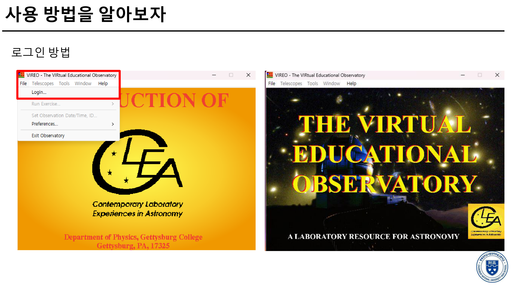
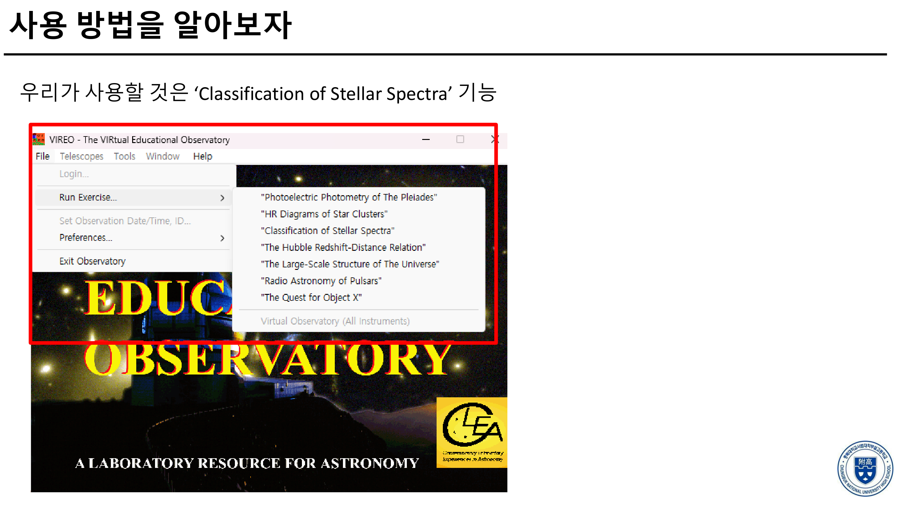
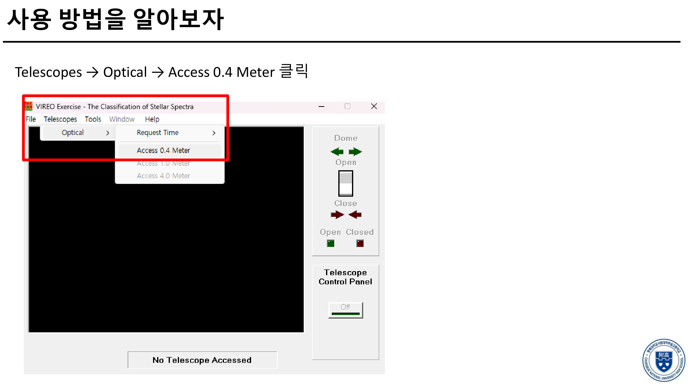
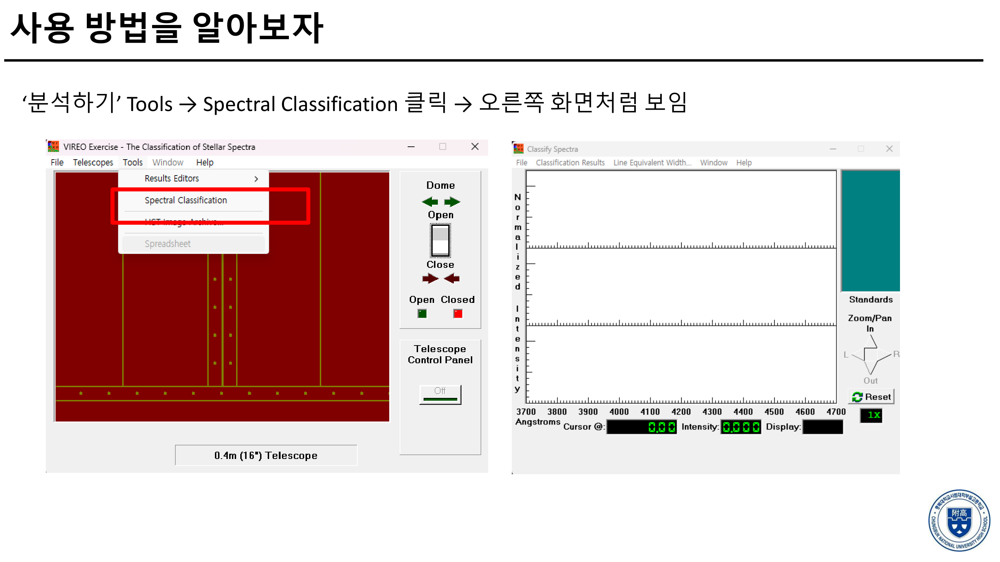
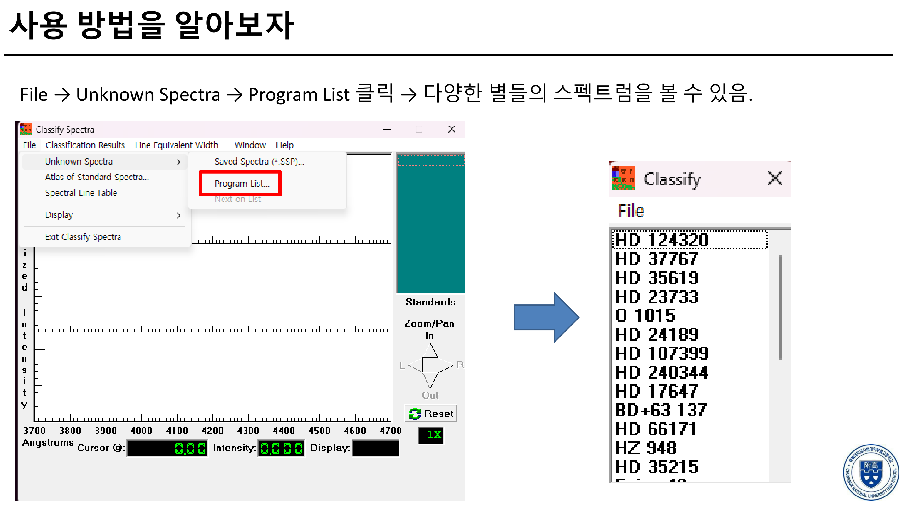
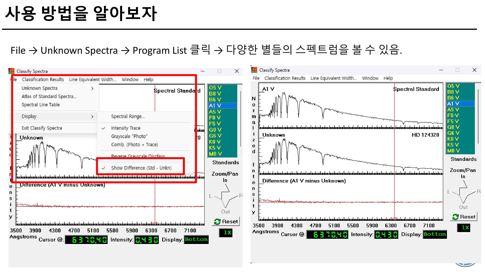

VIREO 프로그램을 활용한
천체 스펙트럼 관측 및 분광형 추론
별의 물리량 중 가장 핵심적인 정보를 담고 있는 것은 바로 스펙트럼(Spectrum)입니다. 가상 천문대 소프트웨어 CLEA VIREO(Classification of Stellar Spectra 모듈)를 활용하여, 미지의 별 8개의 분광 데이터를 불러오고 표준 분광형(O5 V ~ M0 V)과의 비교 및 스펙트럼 차분(Show Difference) 기법을 통해 각 별의 분광형과 주요 흡수선(수소 발머선, Ca II, Fe, He, TiO 등)을 정밀하게 탐색하고 추론합니다.
별의 스펙트럼형과 흡수선의 세기를 비교하여 별의 표면 온도와 광도 계급을 이해하고 추론할 수 있다.
온도에 따라 다르게 나타나는 주요 흡수선(He, H 발머선, Ca II K·H, 중성 금속선, 분자 띠)의 강도를 분석할 수 있다.
0.4m 광학 망원경의 적경·적위 천체 구동(Slew)과 분광기(Spectrometer) 광자 누적 계측 방식을 실습한다.
VIREO 프로그램 조작 및 분광형 분석 가이드
모든 이미지는 클릭 시 초고화질로 확대하여 세부 메뉴를 확인할 수 있습니다.

VIREO 프로그램을 실행한 후 상단 메뉴의 File > Login...을 선택하고 본인의 이름과 학번을 입력하여 로그인합니다.

File > Run Exercise에서 "Classification of Stellar Spectra"(별의 스펙트럼 분류) 기능을 클릭합니다.

상단 메뉴의 Telescopes > Optical > Access 0.4 Meter를 클릭하여 가상 천문대의 0.4m 광학 망원경 돔과 제어반을 활성화합니다.

상단 Tools > Spectral Classification을 클릭하면 오른쪽에 파장별 규격화된 플럭스(Intensity)를 분석하는 Classify Spectra 창이 열립니다.

분석 창에서 File > Unknown Spectra > Program List를 클릭하면 활동지에 제시된 8개 별(HD 124320, O 1015, HD 37767, HD 24189, HD 35619, HD 107399, HD 23733, HD 240344)의 스펙트럼을 즉시 불러올 수 있습니다.

우측 Standards 목록에서 표준 분광형(O5 V ~ M0 V)을 선택하고, 상단 Display > Show Difference (Std - Unkn)을 켭니다. 하단의 차분선이 완전히 평탄한 일직선(0)이 될 때의 분광형이 해당 별의 정확한 분광형입니다!
연습용 3대 별 좌표 입력 & 분광 관측 (.SSP 저장)
망원경 제어반에서 Set Coordinates...를 누르고 적경·적위를 입력하면 망원경이 자동으로 해당 별로 선회(Slew)합니다.
시야를 Telescope(15.0 Arc Min)로 전환하여 슬릿 중앙 정렬 후, Instrument를 Spectrometer > Access하여 Go를 누릅니다.
S/N비 100 이상 확보 후 File > Save하여 별 이름(예: `VEGA.SSP`)으로 저장하고, Spectral Classification 창에서 불러와 분석합니다.
VIREO를 이용한 천체 스펙트럼 분석하기 활동보고서
2026학년도 지구과학 탐구활동 · 담당교사 김호연
활동1. 천체 스펙트럼을 분석해서 분광형을 추론해보자.
Program List 8개 별과 Standards 비교
💡 작성 팁: Tools > Spectral Classification에서 각 별의 스펙트럼을 불러온 뒤, 우측 표준 분광형(O5 V ~ M0 V)과 차분(Difference)하여 일치하는 분광형(예: A1 V, G0 V, K5 V 등)을 기재합니다.
| 별 이름 | 추론한 분광형 | 별 이름 | 추론한 분광형 |
|---|---|---|---|
| HD 124320 | O 1015 | ||
| HD 37767 | HD 24189 | ||
| HD 35619 | HD 107399 | ||
| HD 23733 | HD 240344 |
활동2. 각 별에서 관측할 수 있는 흡수선의 종류를 탐색해보자.
흡수선 파장 및 원소 종류 탐색💡 작성 팁: VIREO 스펙트럼에서 두드러지게 나타나는 흡수선을 관찰하여 기재합니다. (예: 수소 발머선(Hα, Hβ, Hγ, Hδ), Ca II(K, H선), He I, He II, Fe I, Fe II, TiO 밴드 등)
| 별 이름 | 관측할 수 있는 흡수선의 종류 | 별 이름 | 관측할 수 있는 흡수선의 종류 |
|---|---|---|---|
| HD 124320 | O 1015 | ||
| HD 37767 | HD 24189 | ||
| HD 35619 | HD 107399 | ||
| HD 23733 | HD 240344 |